KM. Sabuk Nusantara 63
Pilih tahun
| Nama Owner Surveyor | Deniar Firdausi N. |
| Survei Pra Docking | - |
| Tanggal Tiba Galangan | 12-09-2024 |
| Lokasi Galangan | PT. Klasaman Indah Raya, Sorong |
| Status Survei | Annual Survei 3 / Special Survei 2 |
| Tanggal Naik Dock | 14-09-2024 |
| Tanggal Turun Dock | 04-10-2024 |
| Tanggal Sea Trial | 08-10-2024 |
| Tanggal Kembali Ke Homebase | 10-10-2024 |
| Catatan | Cooler ME dan AE mengalami keropos, perlu penggantian tahun depan. |
Tidak ada data tahun ini.
Swipe
KM. Sabuk Nusantara 63
PROGRESS PRESENTASE
100%
Laporan Perawatan Crew
| NO | TANGGAL | DEPARTEMEN | KEGIATAN | KETERANGAN | DOKUMENTASI |
|---|---|---|---|---|---|
| 1. | 15/09/2024 | Mesin | Perawatan mesin induk kiri | Ganti baru filter bahan bakar | 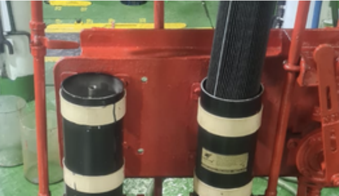 |
| 2. | 15/09/2024 | Mesin | Perawatan mesin bantu | Pengecekan pompa air laut |  |
| 3. | 15/09/2024 | Deck | Perawatan weather deck | Perawatan deck 3 luar |  |
| 4. | 15/09/2024 | Deck | Perawatan weather deck | Pengecatan deck haluan |  |
| 5. | 15/09/2024 | Deck | Perawatan weather deck | Pengecatan deck buritan | 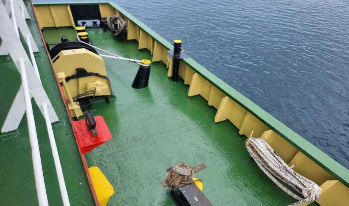 |
| 6. | 16/09/2024 | Deck | Perawatan akomodasi penumpang | Rapihkan kasur dan pel lantai |  |
| 7. | 16/09/2024 | Mesin | Perawatan ruang kamar mesin | Pengecatan lantai kamar mesin | 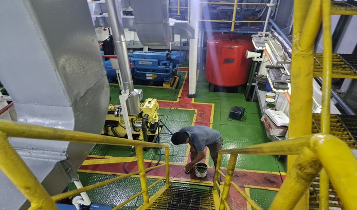 |
| 8. | 16/09/2024 | Mesin | Perawatan electromotor pompa-pompa | Sirlak dan bersihkan elmot pompa | 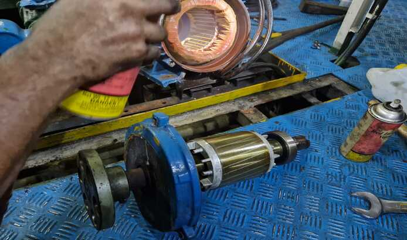 |
| 9. | 16/09/2024 | Mesin | Perawatan cooler ME kanan | Rendam intercooler | 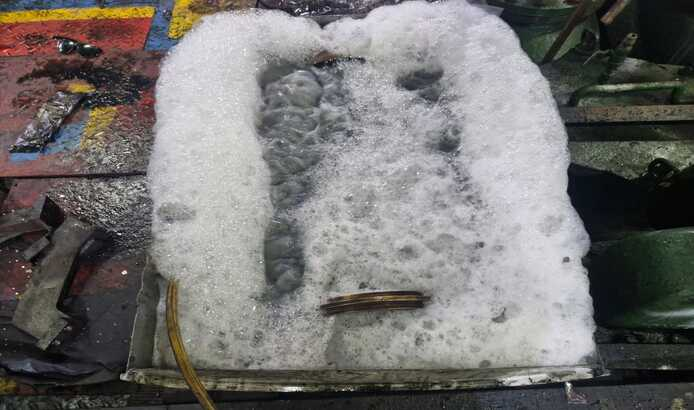 |
| 10. | 16/09/2024 | Deck | Perawatan lifeboat/rescue boat (Lambung) | Pengecatan lambung sekoci | 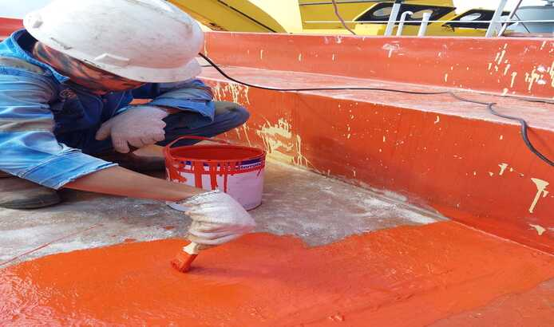 |
| 11. | 17/09/2024 | Deck | Perawatan/Pengecekan Alat Keselamatan (Holmes Light) | Pengecekan | 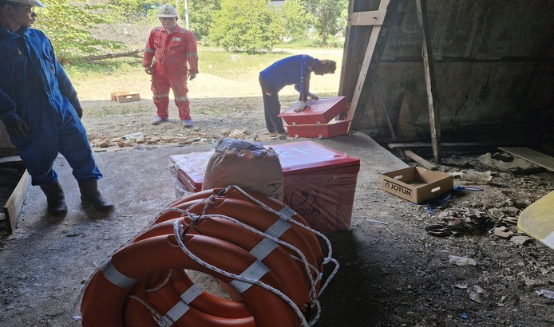 |
| 12. | 17/09/2024 | Deck | Perawatan/Pengecekan Alat Keselamatan (Lifejacket) | Cek kelengkapan | 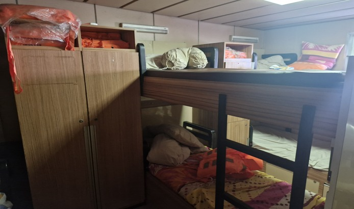 |
| 13. | 17/09/2024 | Deck | Perawatan/Pengecekan Alat Keselamatan (Line Throwing) | Cek Expired | 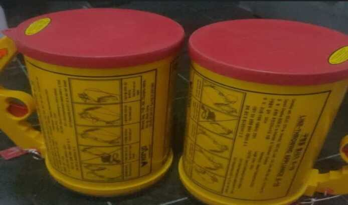 |
| 14. | 17/09/2024 | Mesin | Perawatan ME Kanan | Cek tapped clearance | 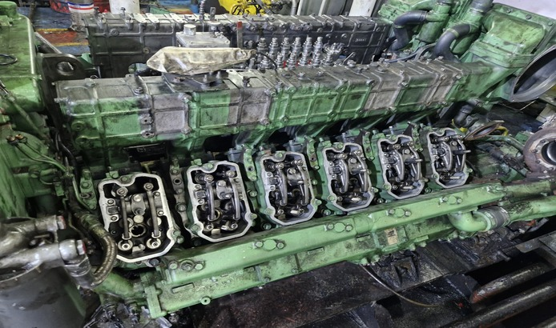 |
| 15. | 17/09/2024 | Mesin | Perawatan AE No. 2 | Cek dan running tes | 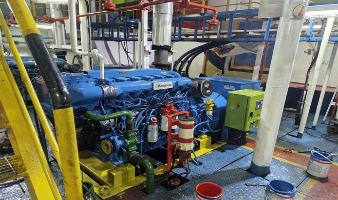 |
| 16. | 18/09/2024 | Deck | Perawatan/Pengecekan Alat Keselamatan (Rocket Parachute Signal) | Cek Expired | 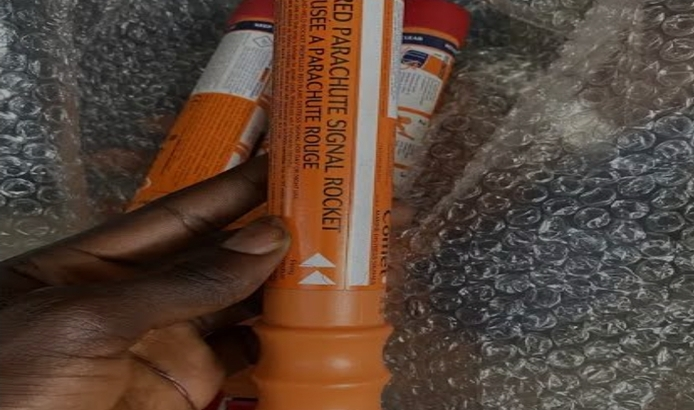 |
| 17. | 18/09/2024 | Deck | Perawatan/Pengecekan Alat Keselamatan (Red Hand Flare) | Cek Expired | 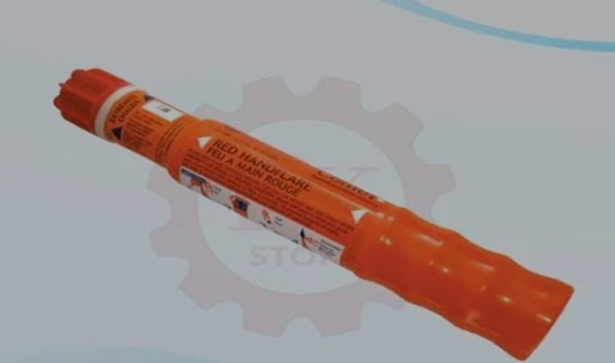 |
| 18. | 18/09/2024 | Deck | Perawatan/Pengecekan Alat Keselamatan (Fireman Outfit) | Cek Kelengkapan | 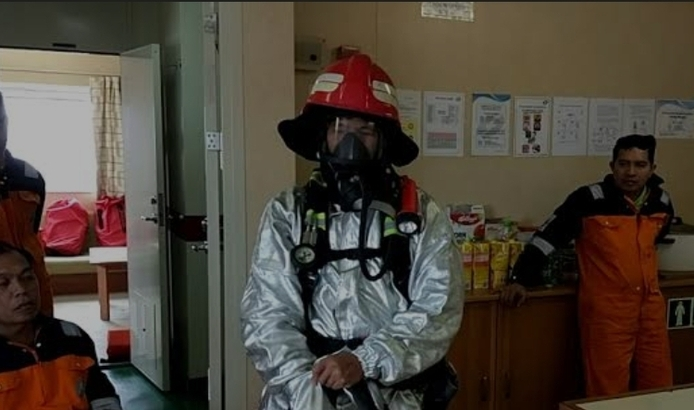 |
| 19. | 18/09/2024 | Mesin | Perawatan GB Kanan | Pengecekan dan pengetesan |  |
| 20. | 18/09/2024 | Mesin | Perawatan GB Kiri | Pengecekan dan pengetesan |  |
| 21. | 19/09/2024 | Deck | Perawatan/Pengecekan Alat Keselamatan (Fire Extinguiser) | Cek kelengkapan dan annual service | 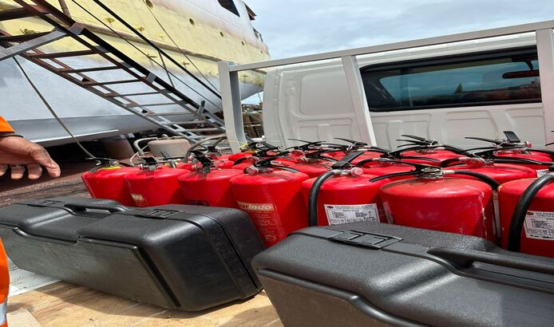 |
| 22. | 19/09/2024 | Deck | Perawatan Tangga Pandu | Cek kelengkapan |  |
| 23. | 19/09/2024 | Deck | Perawatan Accomodation Ladder (Wire) | Kasih pelumas/pelicin |  |
| 24. | 19/09/2024 | Mesin | Perawatan AE No.3 | Cek cylinder head | 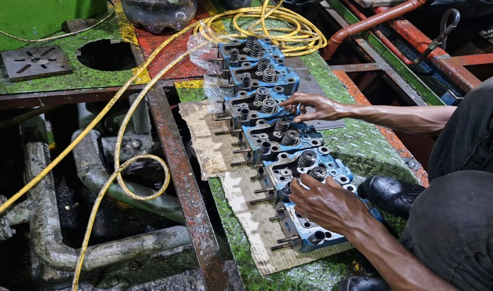 |
| 25. | 19/09/2024 | Mesin | Perawatan AE Harbour | Cek pompa air laut |  |
| 26. | 20/09/2024 | Deck | Perawatan Accomodation Ladder (Roller) | Kasih pelumas/pelicin |  |
| 27. | 20/09/2024 | Deck | Perawatan Accomodation Ladder (Permukaan Tangga Tidak Licin) | Cek/ganti | 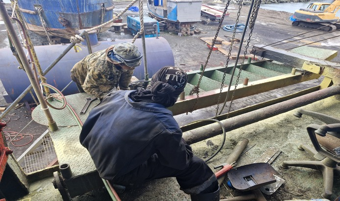 |
| 28. | 20/09/2024 | Deck | Perawatan Accomodation Ladder (Pelumasan Bagian yang Bergerak) | Perawatan |  |
| 29. | 20/09/2024 | Mesin | Perawatan AE Emergency | Running tes |  |
| 30. | 20/09/2024 | Mesin | Perawatan Alternator AE No1 | Pengecekan dan pengetesan |  |
| 31. | 21/09/2024 | Deck | Perawatan Wire Crane dan Tiang Crane | Cek pergantian wire dan perawatan tiang crane | 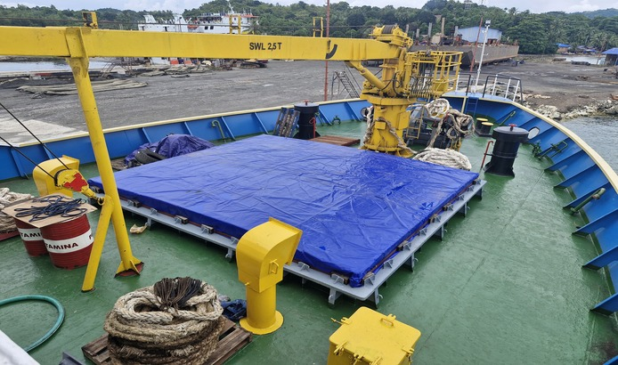 |
| 32. | 21/09/2024 | Deck | Perawatan Lifeboat / Rescue Boat (Wire) | Cek pergantian wire |  |
| 33. | 21/09/2024 | Deck | Perawatan Lifeboat / Rescue Boat (David) | Perawatan dan pengecatan |  |
| 34. | 21/09/2024 | Mesin | Perawatan Alternator AE No2 | Pengecekan dan pengetesan | 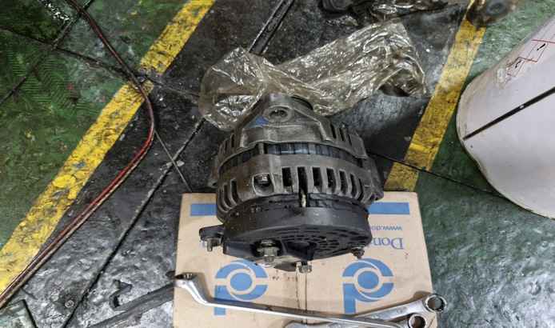 |
| 35. | 21/09/2024 | Mesin | Perawatan Alternator AE No3 | Pengecekan dan pengetesan | 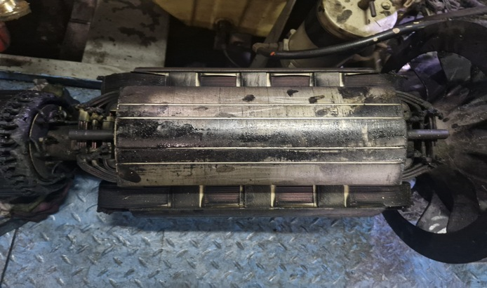 |
| 36. | 22/09/2024 | Deck | Perawatan Lifeboat / Rescue Boat (Cek Perlengkapan) | Cek kelengkapan dan masa expired | 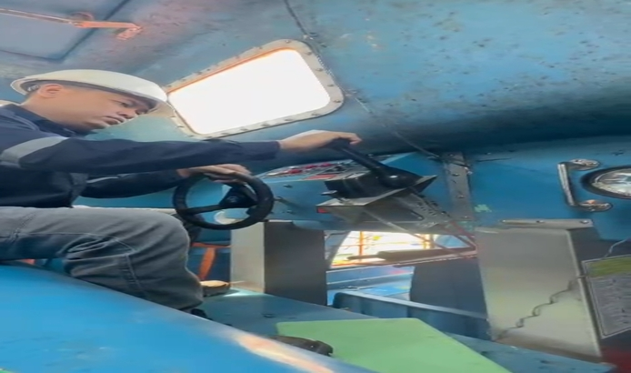 |
| 37. | 22/09/2024 | Deck | Perawatan ILR | Perawatan pondasi dan annual service |  |
| 38. | 22/09/2024 | Deck | Perawatan MES | Cat ulang | 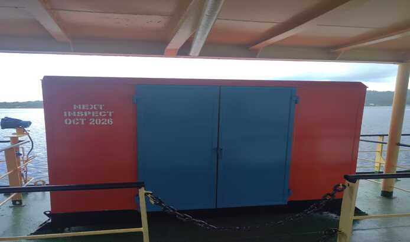 |
| 39. | 22/09/2024 | Mesin | Perawatan Alternator AE Harbour | Pengecekan dan pengetesan |  |
| 40. | 22/09/2024 | Mesin | Perawatan Alternator AE Emergency | Pengecekan dan pengetesan | 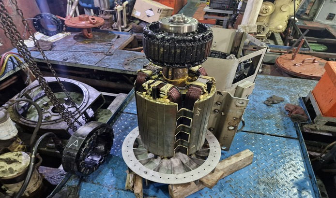 |
| 41. | 23/09/2024 | Deck | Perawatan Weather Deck/Dek Terbuka (Deck 2) | Pengecatan | 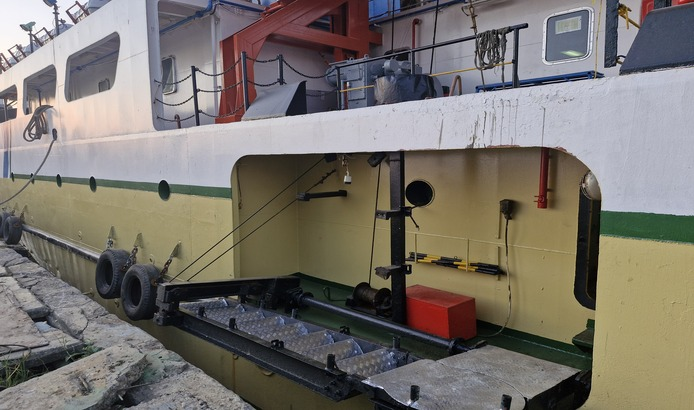 |
| 42. | 23/09/2024 | Deck | Perawatan Weather Deck/Dek Terbuka (Deck 4) | Pengecatan | 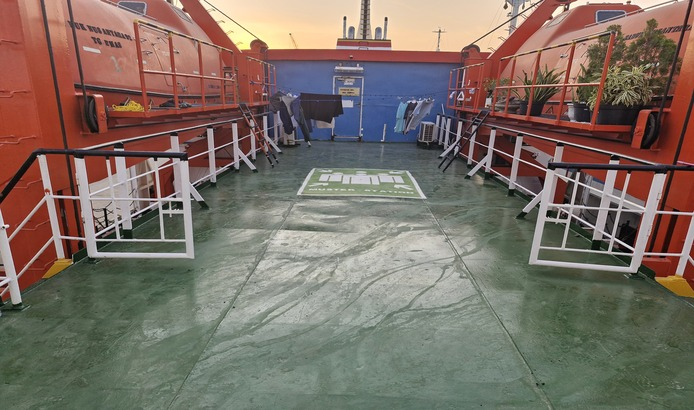 |
| 43. | 23/09/2024 | Deck | Perawatan Weather Deck/Dek Terbuka (Deck 5/Top Deck) | Pengecatan |  |
| 44. | 23/09/2024 | Mesin | Perawatan Air Compressore No.1 | Pengecekan dan pengetesan | 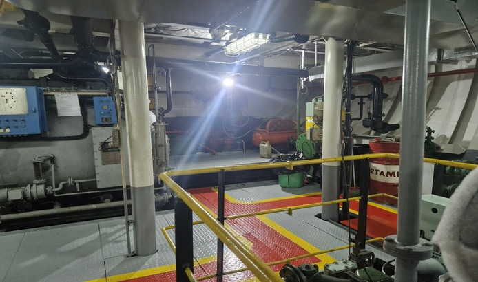 |
| 45. | 23/09/2024 | Mesin | Perawatan Air Compressore No.2 | Pengecekan dan pengetesan | 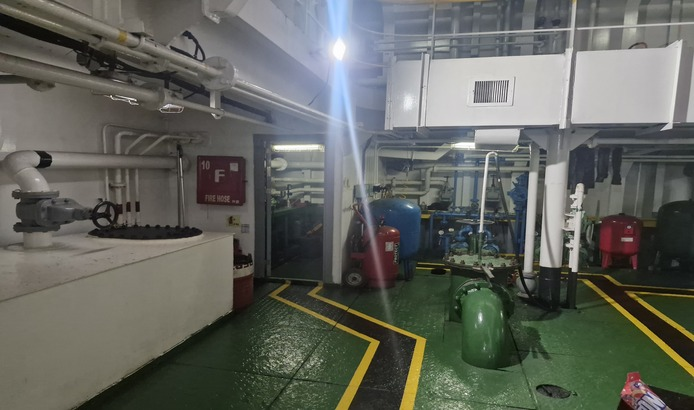 |
| 46. | 24/09/2024 | Deck | Perawatan deck fitting & equipment | Perawatan dan cleaning |  |
| 47. | 24/09/2024 | Deck | Perawatan bangunan atas kapal | Pengecatan | 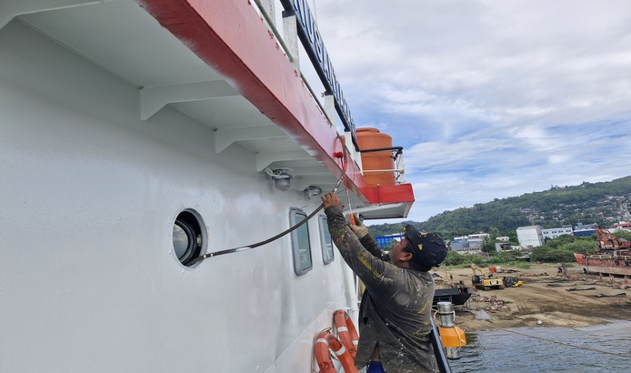 |
| 48. | 24/09/2024 | Deck | Perawatan Toilet Penumpang | Bersihkan dan cat ulang | 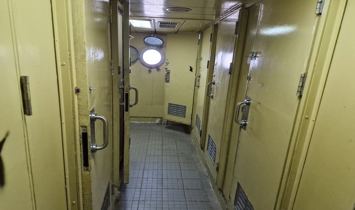 |
| 49. | 24/09/2024 | Mesin | Perawatan Mesin AC No.1 / AHU | Bersihkan komponen dan cek freon |  |
| 50. | 24/09/2024 | Mesin | Perawatan Mesin AC No.2 / AHU | Bersihkan komponen dan cek freon | 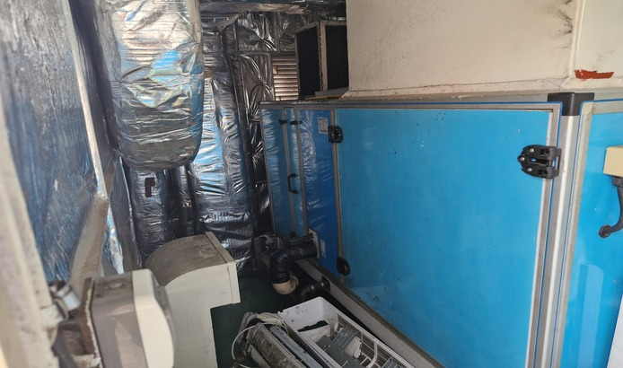 |
| 51. | 25/09/2024 | Deck | Perawatan dan Pembersihan palka / ruang cargo | Pengecatan dan perawatan | 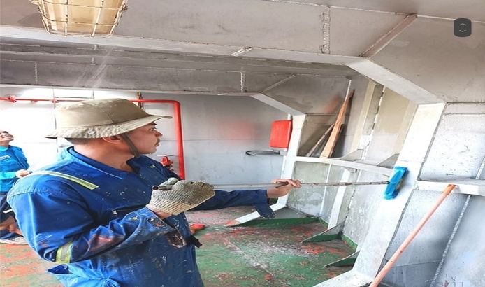 |
| 52. | 25/09/2024 | Deck | Perawatan Alat Navigasi (GPS) | Pengecekan |  |
| 53. | 25/09/2024 | Deck | Perawatan Alat Navigasi (Radar No 1) | Pengecekan |  |
| 54. | 25/09/2024 | Mesin | Perawatan Mesin AC No.3 / AHU | Bersihkan komponen dan cek freon |  |
| 55. | 25/09/2024 | Mesin | Perawatan Mesin AC No.4 / AHU | Bersihkan komponen dan cek freon |  |
| 56. | 26/09/2024 | Deck | Perawatan Alat Navigasi (Radar No 2) | Pengecekan | 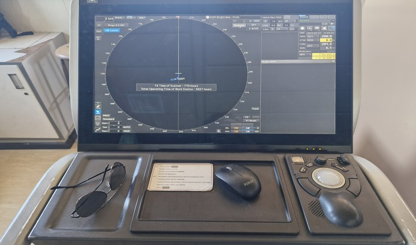 |
| 57. | 26/09/2024 | Deck | Perawatan Alat Navigasi (AIS) | Pengecekan |  |
| 58. | 26/09/2024 | Deck | Perawatan Alat Navigasi (Gyro Compass) | Pengecekan |  |
| 59. | 26/09/2024 | Mesin | Perawatan AC Split | Bersihkan komponen dan cek freon | 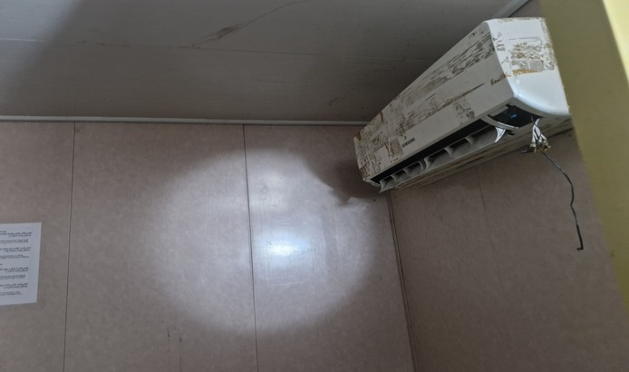 |
| 60. | 26/09/2024 | Mesin | Perawatan Cargo Crane | Pengecekan dan pengetesan |  |
| 61. | 27/09/2024 | Deck | Perawatan Alat Navigasi (Compass Magnetic + Spare) | Pengecekan |  |
| 62. | 27/09/2024 | Deck | Perawatan Alat Navigasi (Auto Pilot) | Pengecekan | 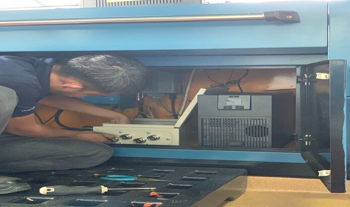 |
| 63. | 27/09/2024 | Deck | Perawatan Alat Navigasi (Windspeed) | Pengecekan |  |
| 64. | 27/09/2024 | Mesin | Perawatan Cooler ME Kiri | Rendam intercooler | 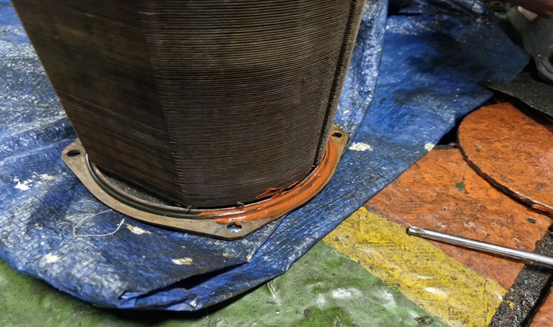 |
| 65. | 27/09/2024 | Mesin | Perawatan Cooler AE No.1 | Rendam intercooler |  |
| 66. | 28/09/2024 | Deck | Perawatan Alat Navigasi (Rudder Angle Indicator) | Pengecekan dan pengetesan |  |
| 67. | 28/09/2024 | Deck | Perawatan Alat Navigasi (Electromagnetic Log) | Pengecekan |  |
| 68. | 28/09/2024 | Deck | Perawatan Alat Navigasi (Digital Log) | Pengecekan | 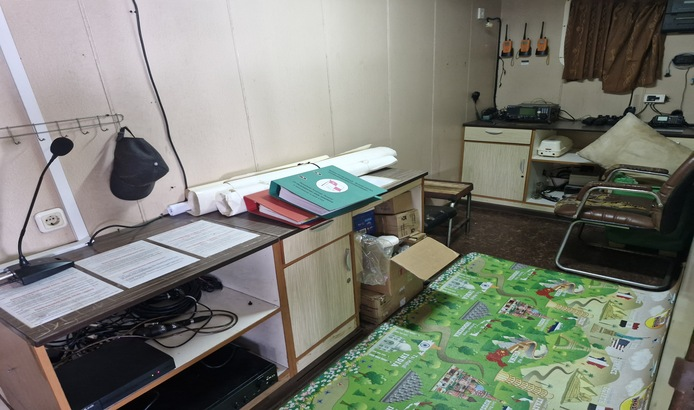 |
| 69. | 28/09/2024 | Mesin | Perawatan Cooler AE No.2 | Cleaning | 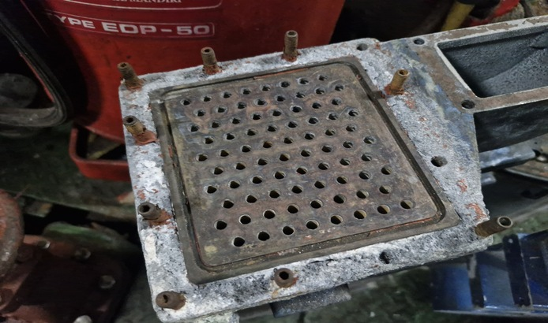 |
| 70. | 28/09/2024 | Mesin | Perawatan Cooler AE No.3 | Cleaning | 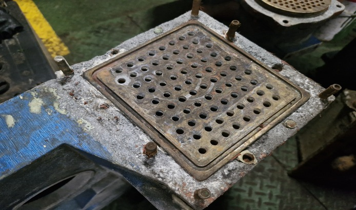 |
| 71. | 29/09/2024 | Deck | Perawatan Alat Navigasi (Echosounder) | Pengecekan | 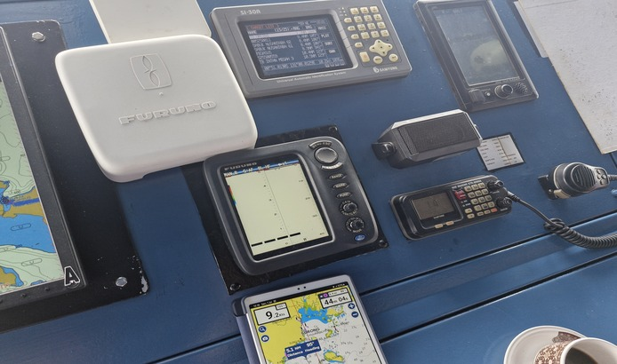 |
| 72. | 29/09/2024 | Deck | Perawatan Alat Navigasi (Speed Indicator) | Pengecekan | 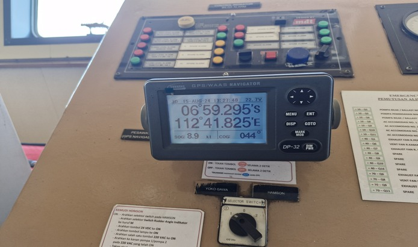 |
| 73. | 29/09/2024 | Deck | Perawatan Alat Navigasi (Chronometer) | Pengecekan | 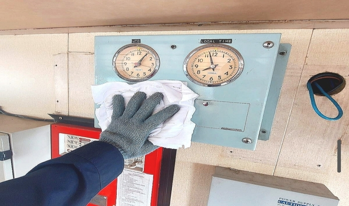 |
| 74. | 29/09/2024 | Mesin | Pembersihan Funnel / Cerobong | Pembersihkan dan pengecatan | 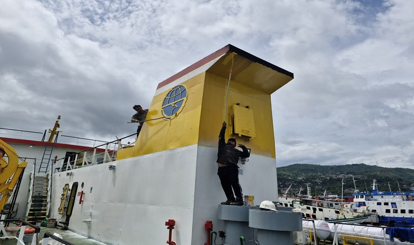 |
| 75. | 29/09/2024 | Mesin | Perawatan Accomodation Ladder (Electromotor) | Pengecekan |  |
| 76. | 30/09/2024 | Deck | Perawatan Alat Navigasi (Clock System) | Pengecekan |  |
| 77. | 30/09/2024 | Deck | Perawatan Alat Navigasi (Weather Facsimiles Receiver) | Pengecekan |  |
| 78. | 30/09/2024 | Deck | Perawatan Alat Navigasi (Radio Equipment) | Pengecekan | 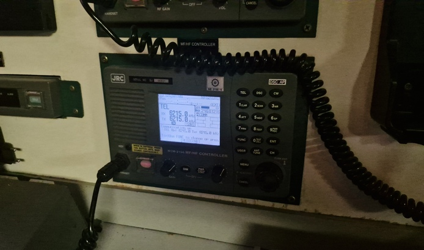 |
| 79. | 30/09/2024 | Mesin | Perawatan Accomodation Ladder (Gearbox) | Pengecekan | 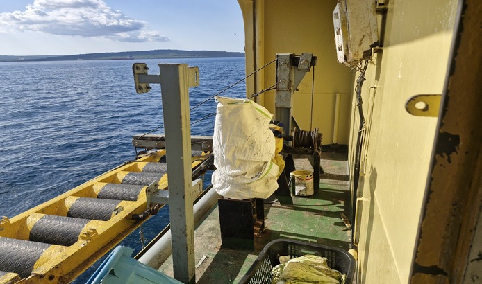 |
| 80. | 30/09/2024 | Mesin | Perawatan Accomodation Ladder (Panel) | Pengecekan |  |
| 81. | 01/10/2024 | Deck | Perawatan Alat Navigasi (SART) | Cek expired dan kelengkapan | 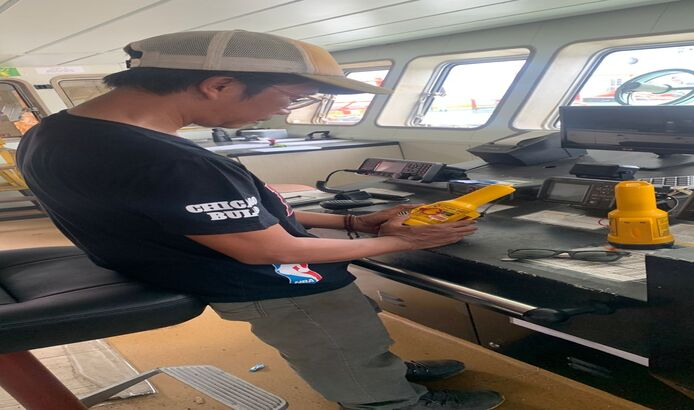 |
| 82. | 01/10/2024 | Deck | Perawatan Alat Navigasi (EPIRB) | Cek expired dan HRU | 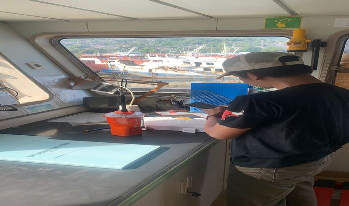 |
| 83. | 01/10/2024 | Deck | Perawatan Alat Navigasi (Internal Communication System) | Pengecekan |  |
| 84. | 01/10/2024 | Deck | Perawatan Alat Navigasi (VHF/FM radio telephone) | Pengecekan | 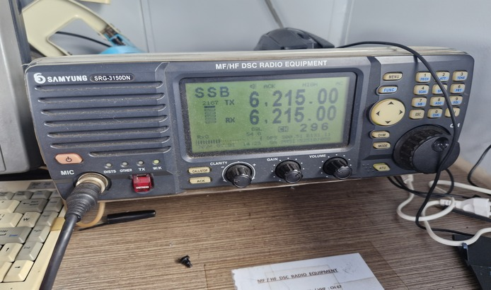 |
| 85. | 01/10/2024 | Mesin | Perawatan Steering Gear (Hydraulic Pump 1 & 2) | Pengecekan dan pengetesan | 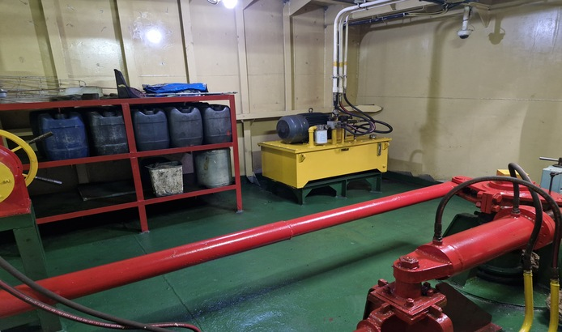 |
| 86. | 01/10/2024 | Mesin | Perawatan Steering Gear (Steering Gear Room) | Cleaning |  |
| 87. | 01/10/2024 | Mesin | Perawatan Steering Gear (Emergency Steering Gear) | Pengecekan dan pengetesan |  |
| 88. | 01/10/2024 | Mesin | Perawatan Steering Gear (Perawatan dan Pengecatan) | Pengecetan | 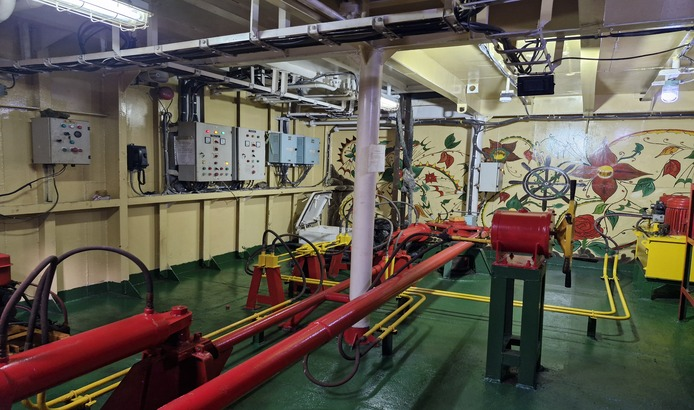 |
| 89. | 01/10/2024 | Mesin | Perawatan BT (Hydraulic Power Unit) | Pengecekan sistem | 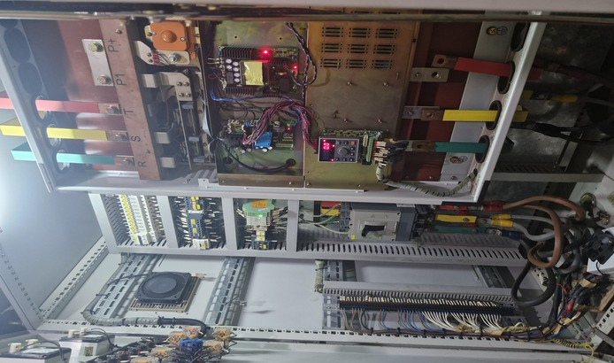 |
| 90. | 01/10/2024 | Mesin | Perawatan BT (Electric System) | Pengecekan sistem | |
| 91. | 02/10/2024 | Deck | Perawatan Alat Navigasi (Two way VHF radio) | Pengecekan |  |
| 92. | 02/10/2024 | Deck | Perawatan Alat Navigasi (Walkie talkie) | Pengecekan |  |
| 93. | 02/10/2024 | Deck | Perawatan Alat Navigasi (Public Addressor) | Pengecekan dan uji fungsi | |
| 94. | 02/10/2024 | Mesin | Perawatan Fairlead | Kasih pelumas |  |
| 95. | 02/10/2024 | Mesin | Perawatan Watertight door | Pengecekan |  |
| 96. | 02/10/2024 | Mesin | Perawatan Fire door | Pengecekan | |
| 97. | 03/10/2024 | Mesin | Perawatan Main Boiler | Pengecekan |  |
| 98. | 03/10/2024 | Deck | Perawatan Alat Navigasi (Navigation Light) | Pengecekan |  |
| 99. | 03/10/2024 | Deck | Perawatan Alat Navigasi (Aldis Lamp) | Pengecekan | |
| 100. | 03/10/2024 | Mesin | Perawatan Pompa-Pompa | Cek komponen dan uji fungsi |  |
| 101. | 03/10/2024 | Mesin | Perawatan Main Switch Board (AE 1) | Cek komponen dan uji fungsi | |
| 102. | 04/10/2024 | Deck | Perawatan Alat Navigasi (Search Light) | Pengecekan |  |
| 103. | 04/10/2024 | Deck | Perawatan Alat Navigasi (Window Wipers) | Pengecekan dan pengetesan |  |
| 104. | 04/10/2024 | Deck | Perawatan Alat Navigasi (Clear View Screen) | Pengecekan dan pengetesan |  |
| 105. | 04/10/2024 | Mesin | Perawatan Main Switch Board (AE 2) | Cek komponen dan uji fungsi | |
| 106. | 04/10/2024 | Mesin | Perawatan Main Switch Board (AE 3) | Cek komponen dan uji fungsi | |
| 107. | 05/10/2024 | Deck | Perawatan ECDIS | Pengecekan | |
| 108. | 05/10/2024 | Deck | Perawatan CCTV | Pengecekan | |
| 109. | 05/10/2024 | Deck | General Cleaning | Bersihkan seluruh ruang |  |
| 110. | 05/10/2024 | Mesin | Perawatan Main Switch Board (Harbour Generator) | Cek komponen dan uji fungsi |  |
| 111. | 05/10/2024 | Mesin | Perawatan Main Switch Board (Emergency Generator) | Cek komponen dan uji fungsi |  |
| 112. | 06/10/2024 | Mesin | Perawatan Main Switch Board (BT) | Cek komponen dan uji fungsi |  |
| 113. | 06/10/2024 | Mesin | Perawatan Main Switch Board (Fan Blower) | Cek komponen dan uji fungsi | |
| 114. | 06/10/2024 | Deck | Perawatan/Pengecekan Alat Keselamatan (Lifebouy) | Pengecatan |